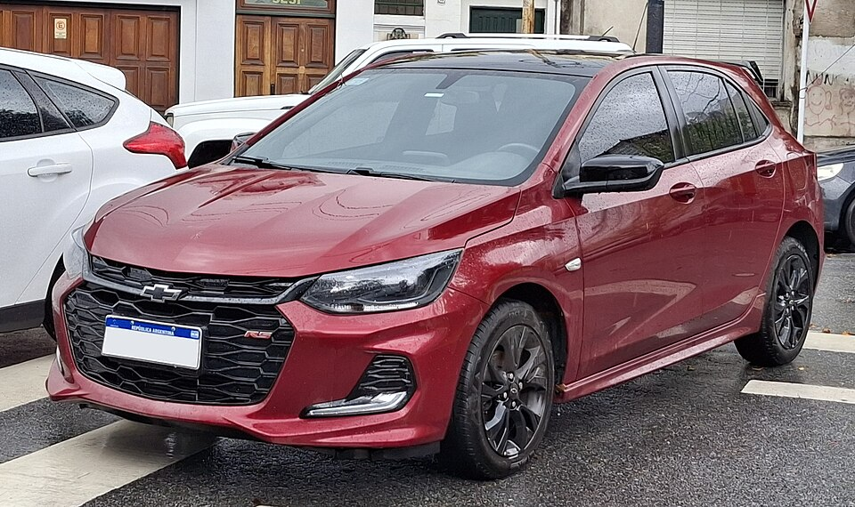
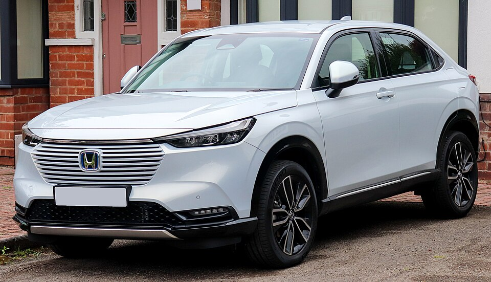
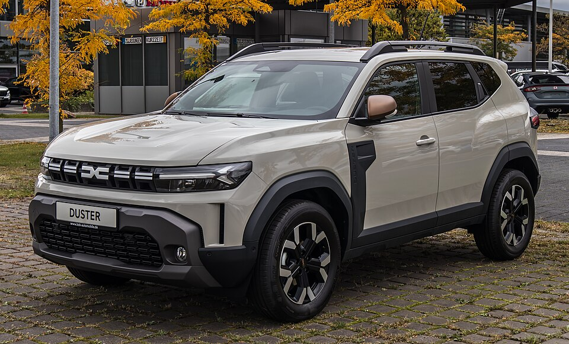

Octubre 2026
Facundo Gomez Automotores
Así se movieron tus autos del 1 al 31 de octubre de 2026.
Consultas por WhatsApp, semana a semana
Las consultas crecieron todas las semanas. Martes y sábados fueron los días con más movimiento.
Tus autos este mes
| Auto | Visitas | Conversión | Estado | |
|---|---|---|---|---|
| Toyota Corolla 2021 US$ 22.500 | 412 | 24 | 5,8% | Publicado |
 VW Golf 2018 VW Golf 2018$ 19.500.000 | 288 | 19 | 6,6% | Publicado |
 Chevrolet Onix 2022$ 20.500.000 | 201 | 14 | 7,0% | Vendido ✓ |
 Honda HR-V 2020US$ 25.900 | 156 | 1 | 0,6% | Publicado |
 Renault Duster 2021$ 24.800.000 | 97 | 9 | 9,3% | Vence el 5/11 |
Conversión = de cada 100 personas que vieron el auto, cuántas te escribieron.
Recomendaciones para noviembre
156 personas lo vieron y solo 1 escribió. Suele pasar cuando el precio está por encima de autos parecidos. Revisá el precio o sumá «acepta permuta».
Tiene 2 fotos. Los autos con 4 fotos o más reciben más consultas.
Vence el 5 de noviembre y es tu auto con mejor conversión (9,3%). Renovalo para que siga visible.
El Corolla y el Golf, con «único dueño» y «VTV al día» marcados, recibieron el 64% de tus consultas.
Cómo te fue frente al promedio de Azul Autos
El promedio se calcula con todas las agencias, sin mostrar datos de ninguna en particular.